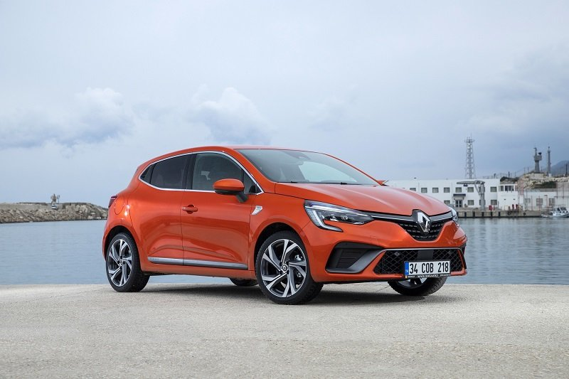
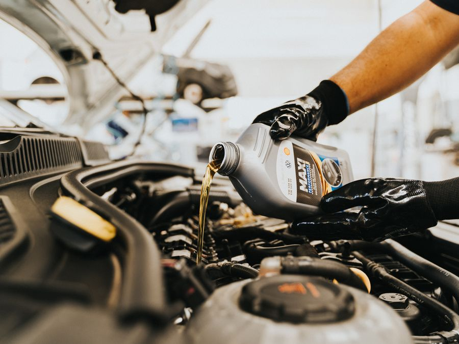
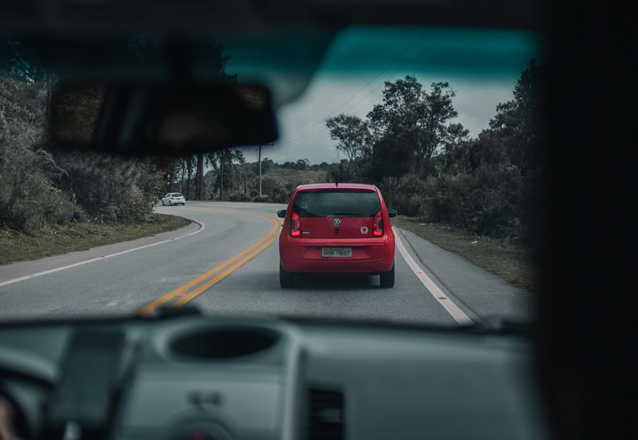

M
Mehmet K.★★★★★
Aracımın kaporta ve boyasını kusursuz yaptılar, renk tutturma harika oldu. İşçilik kalitesi ve ilgi için teşekkürler.
TECHAUTO PLUS; kaporta-boya, boyasız göçük düzeltme, mekanik, arıza tespiti, periyodik bakım ve pasta-cila hizmetlerini tek çatı altında, şeffaf fiyat ve titiz işçilikle sunar.
 Kaporta - Boya
Kaporta - BoyaAracımın kaporta ve boyasını kusursuz yaptılar, renk tutturma harika oldu. İşçilik kalitesi ve ilgi için teşekkürler.
Sigorta hasar sürecini baştan sona hallettiler, hiç uğraşmadım. Güler yüzlü ve çözüm odaklı bir ekip.
Boyasız göçük düzeltmede gerçekten uzmanlar. Dolu hasarım orijinal boyaya dokunulmadan ilk günkü haline döndü.
Periyodik bakımımı uygun fiyata ve hızlı yaptılar. Şeffaf fiyatlandırma güven veriyor, kesinlikle tavsiye ederim.
Dürüst ve işinin ehli. Gereksiz parça değiştirmeden arızamı çözdüler. Aracınızı gönül rahatlığıyla bırakabilirsiniz.
Pasta-cila sonrası araç showroomdan çıkmış gibi oldu. Detaycı çalışıyorlar, çok memnun kaldım.
Bir hizmet seçin; nasıl çalıştığımızı ve örnek çalışmamızı görün.
Çizik, ezik, kapı darbesi ve büyük hasarlarda fabrika kalitesinde kaporta ve boya onarımı. Renk tutturma (boya eşleştirme) sistemiyle, onarılan bölge aracın orijinal rengiyle bütünleşir.
Dolu hasarı, çarpma ve kapı darbelerinde, orijinal boyaya zarar vermeden uygulanan boyasız göçük düzeltme (PDR) yöntemiyle aracınız ilk günkü haline kavuşur. Hızlı, ekonomik ve değer kaybını önler.
Motor, şanzıman, vites, debriyaj, triger ve kayış işlemleri ile aktarma organlarında uzman mekanik onarım. Aracınızın performansını ve güvenliğini koruyacak çözümler sunarız.
Bilgisayarlı (OBD) arıza tespit cihazlarıyla motor, elektronik, sensör ve uyarı lambası hatalarının net teşhisi. Doğru teşhis, gereksiz parça değişiminin önüne geçer; zaman ve maliyet tasarrufu sağlar.
Yağ ve filtre değişimleri, buji, fren ve genel kontroller ile zamanında yapılan periyodik bakım, aracınızın ömrünü uzatır ve yolda kalma riskini azaltır. Mini, Standart ve Premium paket seçenekleri.
Boya koruma, ince çizik giderme, hare ve mat görünüm düzeltme ile aracınıza showroom parlaklığı. Detaylı iç-dış temizlik ve boya koruma uygulamalarıyla aracınızın değerini koruyun.
25 yılı aşan servis yönetimi tecrübesiyle; kaliteli, hızlı ve piyasa şartlarına en uygun maliyetle hasar onarımı gerçekleştiriyoruz.
En önem verdiğimiz değerdir; müşterilerimiz varlık nedenimizdir.
Tüm davranışlarımıza ve iş anlayışımıza yasalar ve etik değerler yön verir.
Sürekli gelişimleri için yatırım yapar, ekibimize önem veririz.
Aracınızı bize bıraktığınız andan teslime kadar net süreç.
Hasar/arıza tespiti ve detaylı bilgilendirme.
Şeffaf teklif, sigorta süreci yönetimi.
Uzman işçilik ve titiz son kontrol.
Temizlenmiş, hazır araç teslimi.

Bakım KampanyasıRenault Clio (benzin/dizel) sahipleri için motor yağı, yağ filtresi, hava ve polen filtresi değişimi dahil periyodik bakım. Orijinal/eşdeğer parça seçeneği ve şeffaf fiyatlandırma ile.

Sigorta AvantajıAracı Allianz Sigorta ile sigortalı müşterilerimize periyodik bakımda %10 indirim. Motor yağı ve filtre değişimi, genel kontrol dahil; orijinal veya eşdeğer parça seçeneğiyle, işçilik garantili.

Güvenli SürüşUzun yola çıkmadan aracınızı uzman ekibimize emanet edin. Fren, lastik, akü, far ve sıvı seviyeleri kontrolüyle güvenle yola çıkın; küçük sorunları büyümeden çözün.
Aracınızın markası, kilometresi ve seçtiğiniz pakete göre tahmini bakım tutarını anında hesaplayın; ardından tek tıkla randevunuzu oluşturun.
Anlaşmalı sigorta şirketleri ile hasar onarımı yapıyor; ekspertiz, evrak ve parça onayı sürecinde size destek oluyoruz.

Hemen randevu oluşturun, uzman ekibimiz aracınızla ilgilensin.